B.S. Computer Engineering
California State University, East Bay
Minor in Computer Science
// Portfolio [This Website is Currently Under Construction]
Computer Engineering Alumni from Cal State East Bay, working where hardware meets software.
Code I've written, from a terminal password manager to the firmware that drives my plotter, plus the self-hosted server I run at home.
Jun 2023 — Present
A personal home server running TrueNAS and Unraid, with Docker containers that stream my own library of movies and TV shows. File sharing between devices runs over SMB/NFS storage pools, much like a company's shared network storage.
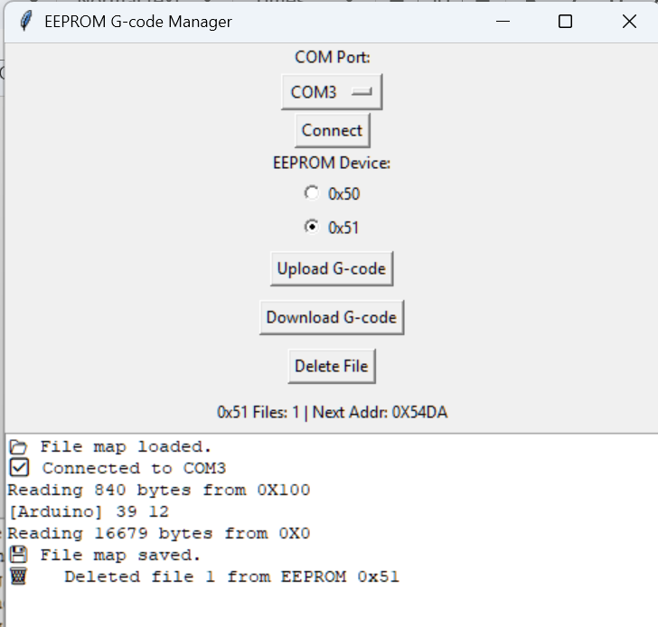
Sep 2024 — May 2025 · Senior Design, team of 3
Firmware for the plotter's ATmega328P plus a Python desktop app for loading drawings. A three-state machine (Idle, Manual, Plotting) handles serial commands like X100, PD or CIRCLE, and plays back G-code (G0, G1, G90, G91) stored in external EEPROM.
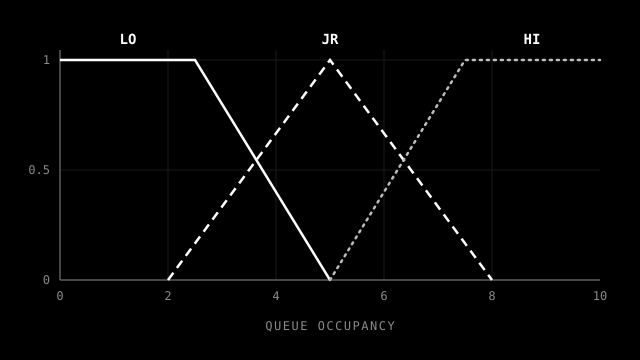
Aug 2023 — Dec 2023 · University research
Firmware for the two boards in the wireless arbitration project. The arbiter runs a small fuzzy inference system that turns the datapath's queue occupancy into a transmit credit. The datapath applies those credits and drains one packet downstream every tick.
Aug 2022 — Feb 2023
A terminal-based password manager that keeps login credentials in an encrypted .txt file. I researched the Vigenère cipher on my own and implemented it to encrypt the stored data.
Boards and embedded systems I've designed and built, from a custom 4-layer PCB to a wireless link between microcontrollers.
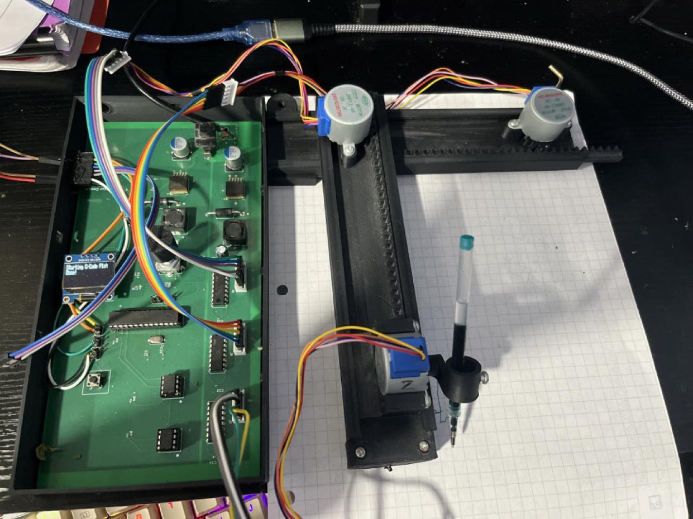
Sep 2024 — May 2025 · Senior Design, team of 3
A custom 4-layer PCB designed in Fusion 360 for a pen plotter, built around an ATmega328P and three ULN2003A drivers for three unipolar stepper motors (X, Y and pen lift). I took it from concept through to a working physical prototype.
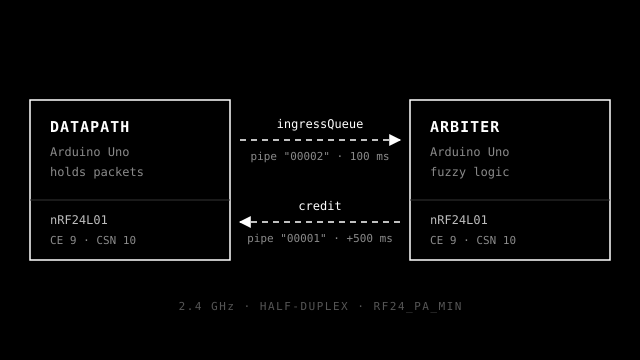
Aug 2023 — Dec 2023 · University research
Two Arduino Unos linked by nRF24L01 2.4 GHz radios over SPI. A datapath board reports how full its packet queue is, and an arbiter board answers with a credit: how many packets it may forward. The credit is set by a fuzzy logic algorithm I designed.
millis(); the arbiter replies 500 ms after each requestComputer Engineering Graduate at Cal State East Bay with hands-on experience across robotics R&D, embedded hardware, and IT support.
Computer Engineering Graduate (Minor in Computer Science) who likes working where hardware meets software. I've tested and validated robotics systems at a startup, designed a 4-layer PCB and the firmware to drive it, built wireless links between microcontrollers, and launched a university's first online print shop. Comfortable troubleshooting anything from a Windows machine to a home server.
California State University, East Bay
Minor in Computer Science
The Bot Company (BotCo)
Cal State East Bay
Cal State East Bay
Cal State East Bay · Wireless Data Arbitration
Progress reports and write-ups on active work. Each report links to the project it covers.
Senior design journal covering the plotter's system architecture, schematics and PCB layout, firmware algorithms, OLED and rotary-encoder interface, and EEPROM G-code storage system. The manufacturing package shows the board as it went to fabrication on 2024-12-11: specs and design rules, the four copper layers rendered from the Gerber files, and the full bill of materials.
How two Arduinos negotiate data flow over radio with a fuzzy-logic credit arbiter. Covers what the project teaches, how the code and timing actually behave, a code review with fixes, and where the same report-and-grant pattern is used in real networks.
Design Journal · CMPE 493 · 2024
Angel Barrera, John San Juan, Ranbir Saini · Department of Computer Engineering, California State University, East Bay
This paper presents the design and implementation of a two-axis stepper motor plotter (2D plotter), a compact and cost-effective device capable of rendering vector-based drawings on a 2D surface. The system utilizes three unipolar stepper motors controlled by an ATmega328P microcontroller to achieve precise motion in the X, Y, and Z axes. Movement calibration is achieved through step-per-millimeter constants, while a pen-lift mechanism enables selective contact with the drawing surface. Commands are processed over a serial interface, allowing the plotter to interpret basic G-code-like instructions for coordinated motion. Emphasis is placed on mechanical accuracy, motor synchronization, and command parsing for reliable operation. The design serves as a foundational platform for educational, artistic, and prototyping applications.
The purpose of this project was to learn how to control multiple stepper motors using programmed step sequences and translate coordinate-based inputs into physical motion. Basic commands are processed over serial to move the pen to specific positions on the drawing surface.
This setup provides a simple example of how embedded systems can be used to automate mechanical tasks. The main learning goals were understanding motor driving techniques, timing and synchronization, and how mechanical limitations affect accuracy and performance.
This project involved designing and building a 2D plotter to gain hands-on experience with stepper motor control, embedded programming, and mechanical system integration. The plotter uses three unipolar stepper motors: two for X and Y axis movement, and one for pen up/down control. An ATmega328 microcontroller runs the control logic, and ULN2003A driver boards are used to interface with the motors.
This project focuses on building a 2D plotter that can move a pen along the X and Y axes to draw shapes based on digital input. To make this possible, we divided the system into several key subsystems: motor control, power delivery, axis calibration, EEPROM memory for saving settings, a 0.9-inch OLED screen for displaying system status, and a rotary encoder for manual navigation and input. Each component plays a role in ensuring the plotter operates accurately and is user-friendly. Our team split these tasks, and the following sections explain what each member contributed, starting with motor setup, power management, and movement calibration.
The 2D plotter system is built around several core subsystems working together to interpret user commands and produce accurate, repeatable motion across two axes. At the heart of the system is an ATmega328PU microcontroller, responsible for coordinating all hardware components.
The X, Y, and Z motion is driven by three unipolar stepper motors, each connected to a ULN2003A driver module. The X and Y motors move the pen across the drawing area, while the Z motor controls pen lift. The system receives movement instructions through a serial interface and translates them into stepper motor signals.
To aid user interaction, the system includes a 0.9-inch OLED screen that displays live feedback such as current coordinates, mode selection, or system status. A rotary encoder allows the user to navigate menu options, confirm selections, and manually adjust the pen position when needed.
An external EEPROM (AT24C256) is used to store configuration settings such as steps-per-millimeter, home positions, and previous drawing modes. This allows the plotter to retain critical data between power cycles.
Power is delivered through a buck converter, which ensures consistent voltage to both logic-level components and motor drivers. Proper calibration of steps-per-millimeter and synchronized motor control are essential for accurate plotting, and the system is designed to accommodate future expansions such as SD card integration or Bluetooth serial control. Fig. 2 illustrates the overall block diagram of the system architecture.
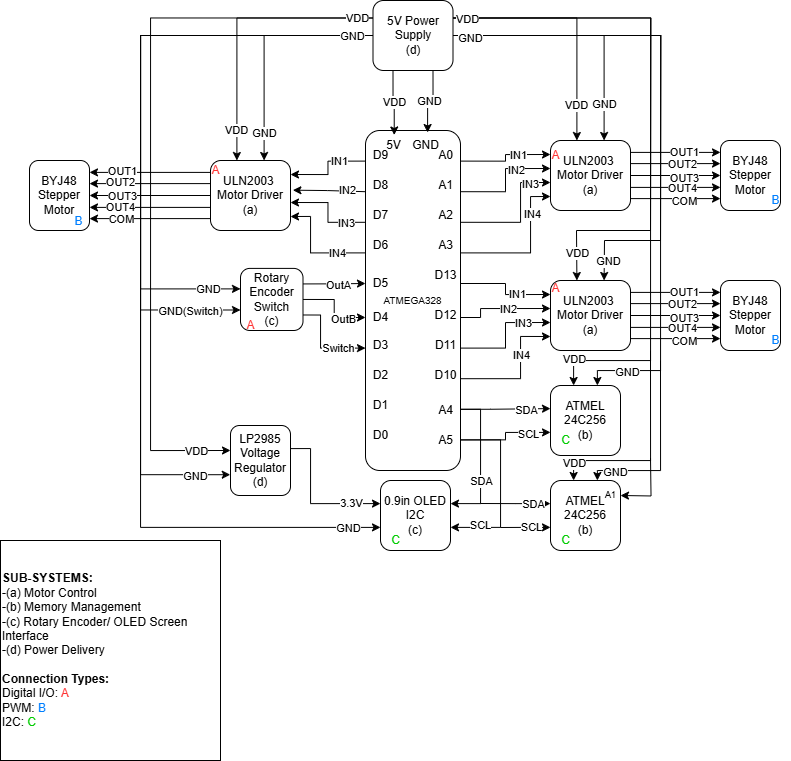
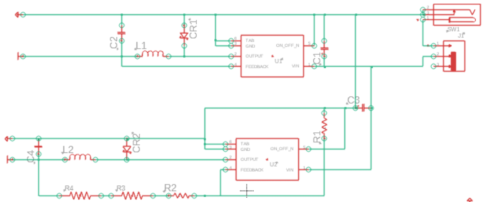
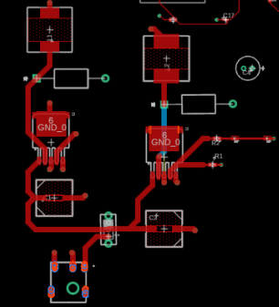
The schematic diagrams represent the core electrical design of the 2D plotter and provide a complete blueprint for replicating or modifying the system. Every component, from the microcontroller to the stepper motor drivers and user interface devices, is laid out with clear interconnections to ensure compatibility, minimize noise, and maintain functional stability. This section presents the finalized schematics used during development, along with the rationale behind key design choices such as power routing, pin assignments, communication protocols, and protection elements. These schematics are critical not only for assembling the system but also for debugging, future scaling, or redesigning individual subsystems.
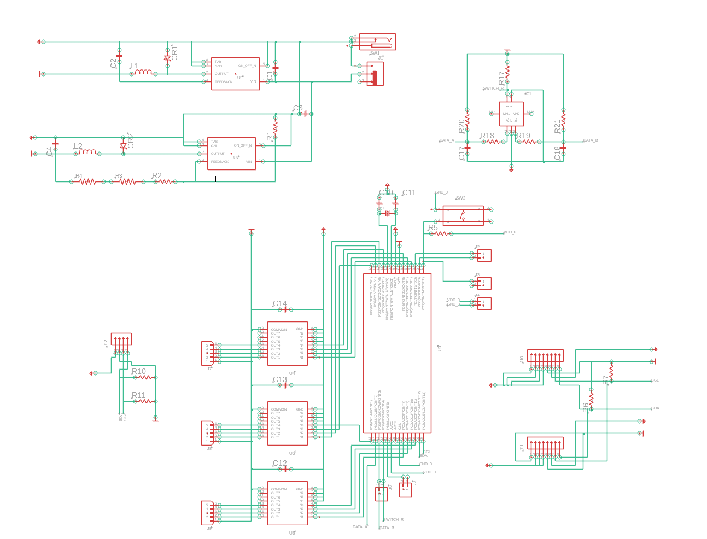
The PCB layout was designed with a strong emphasis on signal integrity, power stability, and manufacturability. Translating the schematic into a real-world board required careful placement of components to minimize trace lengths, avoid crosstalk, and ensure proper grounding. High-current paths for the stepper motors were isolated from the microcontroller logic to reduce noise and prevent brownout conditions. Attention was also given to component orientation and labeling to simplify debugging and assembly. This section outlines the physical layout strategy, layer stackup, trace routing, and spacing rules used to optimize both performance and reliability.
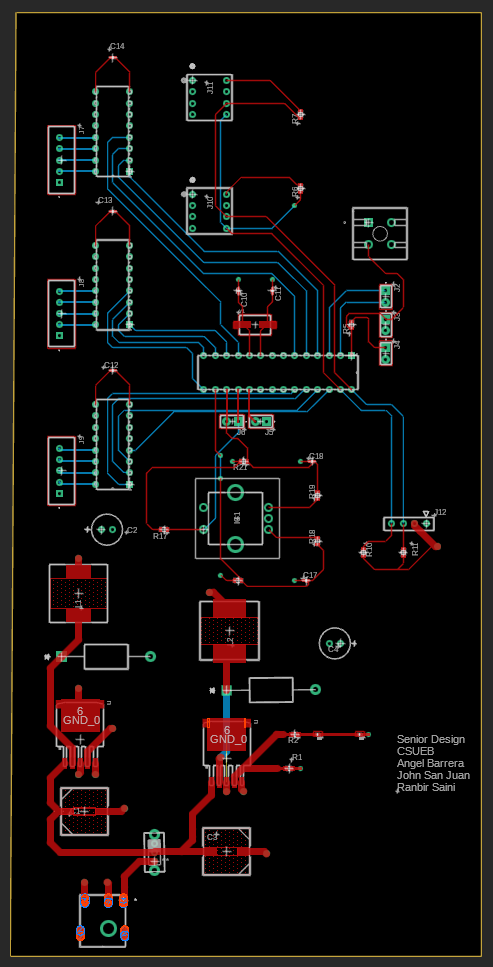
The microcontroller used in this project is the ATmega328P, which is the same chip found on standard Arduino Uno boards. It was chosen due to its low cost, ease of programming, and compatibility with common development tools like the Arduino IDE. The ATmega328P operates at 16 MHz and provides enough digital I/O pins to control all three stepper motors and handle serial communication.
In this setup, digital output pins are connected to the ULN2003A stepper motor driver inputs. The microcontroller sends a series of HIGH and LOW signals in a specific pattern to step the motors in the desired direction. Each axis uses four pins to control one motor, and the Z-axis (pen up/down) is also controlled the same way.
Currently all stepper motors are controlled using the built-in Stepper library, which outputs a step sequence to four digital pins for each motor.
The three unipolar stepper motors are each connected to a ULN2003A driver board, and the pin assignments on the ATmega328P are shown in Table I. The X and Y motors control horizontal and vertical movement, respectively, while the Z motor handles the pen up/down motion.
The Stepper class is instantiated using four control pins per motor, and each motor is set to 2048 steps per revolution. The firmware is structured to respond to basic movement commands over serial, such as X100 or PD, and convert them into discrete motor steps. The Z motor moves the pen using fixed values defined by PEN_DOWN_STEPS and PEN_UP_STEPS.
| Axis / Device | ULN2003A Inputs | ATmega328P Pins |
|---|---|---|
| X-Axis | IN1–IN4 | D6, D7, D8, D9 |
| Y-Axis | IN1–IN4 | A0, A1, A2, A3 |
| Z-Axis | IN1–IN4 | D2, D3, D4, D5 |
| OLED display | — | A4 (SDA), A5 (SCL) |
| EEPROM chip 1 | — | A4 (SDA), A5 (SCL) |
| EEPROM chip 2 | — | A4 (SDA), A5 (SCL) |
| Rotary encoder switch | — | D12 |
The following equations define step conversion, delta movement, and the parametric equations used for circular plotting.
Algorithm 1 — Finite State Machine for Mode Control
Initialize enum OpMode { IDLE, MANUAL_CONTROL, PLOTTING }
loop():
if (currentMode == IDLE):
wait for user input
else if (currentMode == MANUAL_CONTROL):
accept and execute manual axis commands
else if (currentMode == PLOTTING):
read and execute G-code from EEPROMThe FSM controls the plotter's behavior across three operational states. The system switches modes based on parsed serial commands and enables different features depending on the current mode.
Algorithm 2 — Manual Command Parsing
if (command starts with 'X', 'Y', or 'Z'):
axis ← first character of command
steps ← parse remaining characters as integer
if axis == 'X': stepperX.step(steps)
if axis == 'Y': stepperY.step(steps)
if axis == 'Z': stepperZ.step(steps)This algorithm parses manual movement commands such as X100 and moves the respective motor accordingly. It allows users to manually control motion for calibration or positioning.
Algorithm 3 — G-Code Parsing from EEPROM
while (readLineFromEEPROM_to_Buffer(line)):
if (line starts with 'G'):
extract command number
extract X, Y, Z parameters (if present)
constrain values to plot area
moveToZ(Z) if Z is found
moveToXY(X, Y) if X or Y foundThis algorithm reads and executes stored G-code lines. It supports G0, G1, G90, and G91 commands, allowing for automated plotting from EEPROM memory.
Algorithm 4 — EEPROM Line Reader
initialize buffer
while (eepromReadAddress < TOTAL_MEMORY):
byte ← readEEPROMByte(eepromReadAddress)
if byte == END_OF_DATA_MARKER or byte ≥ 0xE0:
return false
if byte == '\n':
null-terminate buffer
return true
append byte to buffer
increment eepromReadAddressAlgorithm 5 — XY Coordinate Step Interpolation
stepsX ← targetStepsX - currentStepsX
stepsY ← targetStepsY - currentStepsY
while (stepsDoneX < abs(stepsX) or stepsDoneY < abs(stepsY)):
if (stepsDoneX < abs(stepsX)):
stepperX.step(directionX)
stepsDoneX++
if (stepsDoneY < abs(stepsY)):
stepperY.step(directionY)
stepsDoneY++This performs basic two-axis interpolation, allowing the plotter to move diagonally by alternating steps on both axes. It doesn't implement smooth interpolation but is effective for low-complexity motion.
Algorithm 6 — EEPROM Address Mapping
if (memoryAddress < EEPROM_SIZE):
i2cAddress ← EEPROM_ADDR1
chipAddress ← memoryAddress
else:
i2cAddress ← EEPROM_ADDR2
chipAddress ← memoryAddress - EEPROM_SIZEThis maps logical EEPROM addresses to physical memory locations across two EEPROM chips. It allows seamless access to a larger address space without manual chip selection.
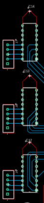
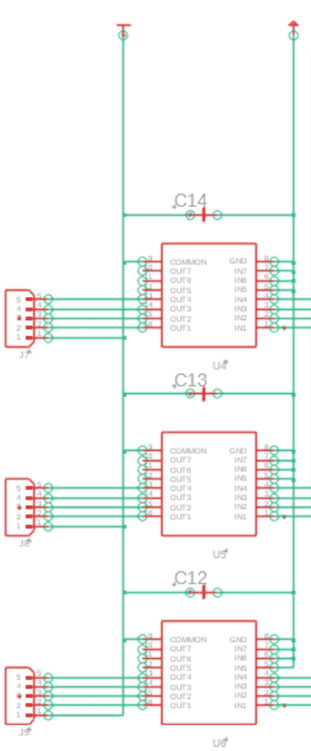
The firmware supports both direct step-based commands (e.g., X100, Y-50) and coordinate-based plotting routines (e.g., CIRCLE, SQUARE), ensuring flexible motor control. To ensure all commands remain within the safe physical bounds of the machine, constrained position values are first calculated and then converted into stepper motor instructions.
Stepper movement is executed sequentially per axis to reduce complexity and avoid loss of position, with each axis updating its logical state after every move. The pen-lifting mechanism is also handled by a stepper motor (Z-axis), which toggles between drawing and non-drawing positions using fixed upward or downward movements.
The subsequent sections detail the equations and algorithms used to:
G-code functionality is currently being tested by manually sending single-line instructions over the serial interface to the PCB. Commands such as X100, Y-50, and Z200 directly move the motors by a specified number of steps, while PD and PU control the pen's vertical movement. Higher-level instructions like CIRCLE and SQUARE trigger pre-programmed drawing routines.
When G-code movement commands are processed, position values are converted into step counts using equations (1) and (2), where the X and Y distances are multiplied by their respective steps-per-millimeter constants and rounded to whole steps. For drawing curves such as circles, each point on the path is calculated using a parametric representation. Equations (4), (5), and (6) define this logic: angle θ is incremented evenly based on the number of segments N (Eq. 4), and each target coordinate xi and yi is computed using cosine and sine functions around a center point (Eqs. 5 and 6). These positions are then converted into step differences (Eq. 3) and fed to the motors.
So far, commands are sent one at a time, allowing real-time testing of motor responses and calibration. Full G-code file parsing from EEPROM is planned, which will allow buffered execution of entire plots using the same equations.
The maximum effective plotting area of the system is limited to 8 cm × 8 cm (80 mm × 80 mm). This constraint is dictated by the mechanical travel range of the stepper motors and the physical size of the plotting frame.
To prevent mechanical overtravel and ensure precise positioning within the 80 mm × 80 mm draw area, all target coordinates are bounded using the constrain() function.
These functions limit the effective input values for x and y to the calibrated range of the machine. If any G-code or manual movement command attempts to move beyond the physical area (e.g., X100 or Y-10), it is automatically adjusted back within range.
After constraining the position, the values are converted into motor steps using the previously defined step conversion equations (1) and (2).
The user interface of the 2D plotter was designed to be simple and easy to use. It includes a rotary encoder and an OLED screen that allow users to select and start a drawing through different predefined G-codes.
The rotary encoder is used to scroll through different G-code designs and menu options. It has two main outputs (signal A and signal B) that send signals to the microcontroller when the knob is turned. The direction of rotation (clockwise or counterclockwise) is determined by checking the timing between these two signals. There is also a push-button built into the encoder that is used to make a selection.
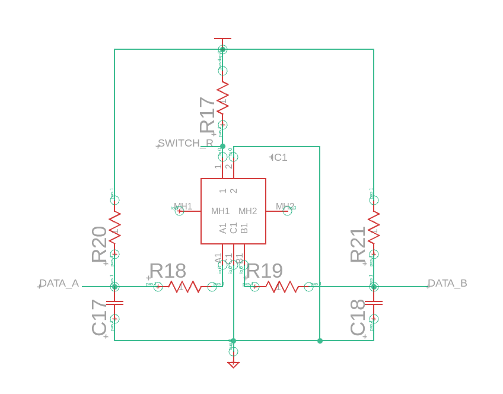
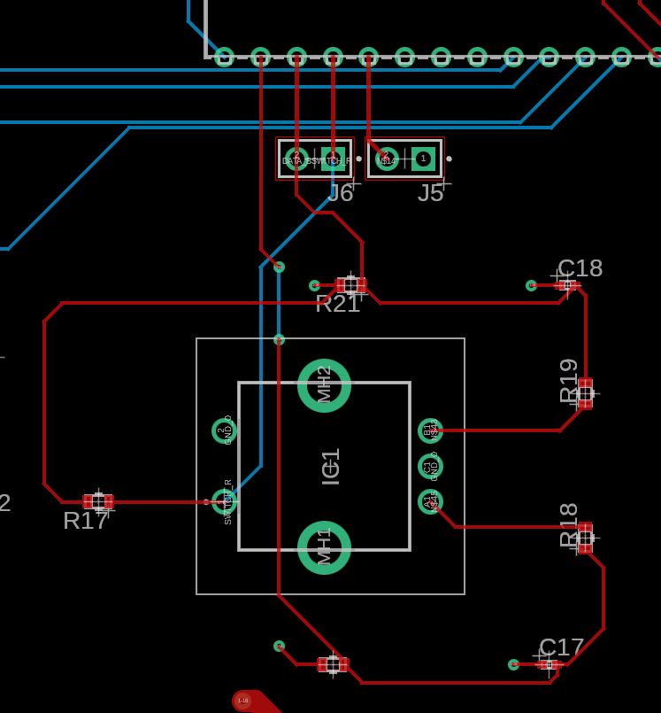
To make sure the encoder works correctly, the following were implemented as per the datasheet:
To track the rotary encoder's rotation direction, the code monitors changes in the A signal, checking for a HIGH to LOW transition. When this happens, it checks the B signal to determine the direction: if B is HIGH, the rotation is clockwise, and the selected row is incremented (moves up); if B is LOW, the rotation is counterclockwise, and the selected row is decremented (moves down).
The millis() function is used to track elapsed time and introduce a delay (rotationDelay) between checks, preventing false or multiple detections of the same rotation step.
if ((millis() - lastUpdate) > rotationDelay) {
if (sigA != lastSigA && sigA == LOW) {
if (sigB == HIGH) {
selectedRow = (selectedRow + 1) % 4;
} else {
selectedRow = (selectedRow - 1 + 4) % 4;
}
updateDisplay();
}
lastUpdate = millis();
}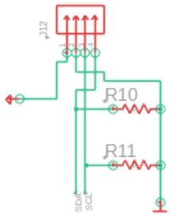
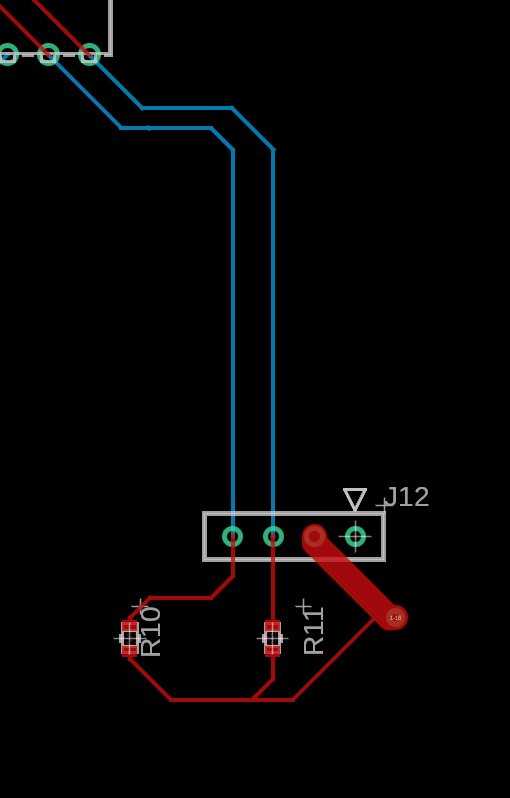
The 128×64 pixel OLED display shows a menu that lets users go through different G-code options. It is connected to the ATmega328P microcontroller using the I²C protocol (SDA and SCL pins). The display is controlled using the Adafruit_GFX and Adafruit_SSD1306 libraries, which make it easier to draw graphics and text as needed [1].
When the device starts, it shows predefined G-codes to be selected. Turning the encoder moves the selection up or down. The currently selected row is highlighted with a black rectangle, making it easy to see which design or selection is chosen.
The UI design is drawn using drawBitmap() and updated regularly:
display.clearDisplay();
display.drawBitmap(0, 0, bitmaps[bitIndex], MYBITMAP_WIDTH, SCREEN_HEIGHT, SSD1306_WHITE);
display.display();Once a design is selected using the encoder button, the system updates the selected index (bitIndex) and displays print progress on the screen using bitmaps. These bitmaps are drawn using the drawBitmap() function. The menu works as follows:
This is how the black rectangle selection is drawn over that area:
int rowTop = selectedRow * 16;
display.drawLine(0, rowTop, 127, rowTop, SSD1306_BLACK);
display.drawLine(0, rowTop + 15, 127, rowTop + 15, SSD1306_BLACK);Explanation of values:
selectedRow * 16 calculates the vertical position (in pixels) of the top of the selected row. Since the display is 64 pixels tall and there are 4 rows, each row is 16 pixels high.127 is the maximum X-coordinate on a 128-pixel-wide screen (0 to 127).rowTop + 15 marks the bottom edge of the rectangle. The height of each row is 16 pixels, and since coordinates start from 0, the last pixel is at rowTop + 15.This helps users clearly see which design is currently selected.
To overcome the limited onboard memory of the ATmega328P, the 2D plotter employs two external EEPROMs (AT24C256) for expanded storage capacity. These EEPROMs are dedicated to storing G-code files, which define the precise motion paths for the plotter's stepper motors. This system enables the retention of multiple plot designs that can be selected and executed by the user without reprogramming the microcontroller.
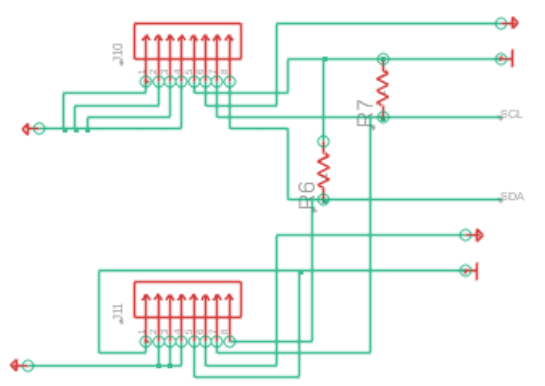
The EEPROMs communicate with the ATmega328P via the I²C protocol, using device addresses 0x50 and 0x51. Each provides 32 kB of non-volatile memory, offering a combined total of 64 kB for persistent data storage. The SDA and SCL lines are connected through 10 kΩ pull-up resistors to maintain signal integrity.
Each EEPROM supports 64-byte page writes. To ensure data integrity, write operations are performed in aligned 64-byte chunks, with a mandatory delay to accommodate the EEPROM's internal write cycle timing.
Example code snippet to write a 64-byte G-code block to EEPROM:
#define EEPROM_ADDR1 0x50
#define GCODE_START_ADDR 0x1000
uint8_t gcodeChunk[64] = { 'G', '0', '1', ' ', 'X', '1', '0', ' ', 'Y', '2', '0', '\n', /* ... */ };
void writeGcodeChunk() {
Wire.beginTransmission(EEPROM_ADDR1);
Wire.write((GCODE_START_ADDR >> 8) & 0xFF);
Wire.write(GCODE_START_ADDR & 0xFF);
for (uint8_t i = 0; i < 64; i++) {
Wire.write(gcodeChunk[i]);
}
Wire.endTransmission();
delay(5);
}This process is iteratively executed to write entire G-code files into the EEPROM memory space.
To streamline the process of uploading and managing G-code files, a Python-based graphical user interface (GUI) was developed. This system enables intuitive control over EEPROM file storage through serial communication with the Arduino.
Key features of the file management system:
The GUI displays current file mappings, available EEPROM space, and real-time upload/download status, offering a user-friendly interface for memory management.
This integration simplifies the workflow for managing multiple G-code designs, providing clear visual feedback and robust file handling.
Upon uploading, the Python script divides G-code files into 64-byte chunks, transmitting each sequentially while awaiting confirmation from the microcontroller. Each file is assigned a unique identifier and mapped to its start address in EEPROM.
Example workflow:
Once stored, the ATmega328P retrieves and parses G-code files in real time. Commands are buffered and converted into stepper motor signals for accurate plotting. Memory optimization strategies are employed to maximize storage efficiency, including:
G01).These methods significantly reduce the memory footprint of each design, enabling a larger library of patterns within the available EEPROM capacity.
This article presents the current progress of our 2D plotter project, which is focused on building a functional drawing machine using unipolar stepper motors and an ATmega328P microcontroller. So far, we have implemented basic motor control, serial command parsing, EEPROM storage for G-code, and a working user interface using an OLED display and rotary encoder.
The system can interpret manual and preprogrammed drawing commands, move the pen accurately in two dimensions, and lift or lower the pen as needed. While many core features are complete, further work is planned to improve G-code support, streamline drawing performance, and expand UI functionality.
This write-up serves as documentation of our current implementation and a reference for future development stages.
Angel Barrera, John San Juan, and Ranbir Saini thank the authors of the open-source 2D plotter project published on Instructables for providing publicly available 3D-printable designs and implementation guidance. The reference designs played an important role in helping the team rapidly prototype the mechanical components of the plotter, and provided a strong foundation during the early development stages of the project.
Fab Package · CMPE 493 · Submitted 2024-12-11
The files sent for fabrication: board layout, schematic, Gerber and drill files, pick-and-place data and bill of materials. Exported from Autodesk Fusion Electronics.
A single 4-layer board carries the whole plotter: the ATmega328P, the three stepper drivers, power regulation, the EEPROM sockets and the user interface. The numbers below come straight from the fabrication files.
Signals are routed on the outer layers, and the two inner layers are solid copper pours: L2 carries the power nets and L3 is a continuous ground plane. Each signal layer sits directly against a solid plane, which gives every trace a short return path and helps keep noise from the motor drivers out of the logic.
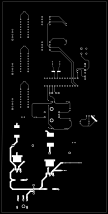
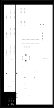
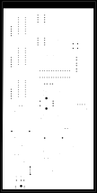
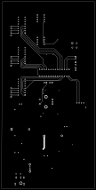
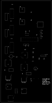
Rendered from the submitted Gerber and Excellon drill files. Copper is shown in white and drilled holes in black.
All parts were sourced from DigiKey. The total is the cost of components for one board, not including the PCB itself.
| Ref | Description | Part number | Qty | Unit | Subtotal |
|---|---|---|---|---|---|
| U3 | IC MCU 8-bit 32 KB flash 28-DIP | ATMEGA328P-PU | 1 | $2.89 | $2.89 |
| U4–U6 | IC power relay driver 7NPN 16-DIP | ULN2003A | 3 | $0.43 | $1.29 |
| U1, U2 | IC reg buck 12 V 3 A TO-263 | LM2596S-12/NOPB | 2 | $6.70 | $13.40 |
| Y1 | Crystal 16.0000 MHz 20 pF SMD | ECS-160-20-3X-TR | 1 | $0.30 | $0.30 |
| IC1 | Rotary encoder mechanical 20 PPR | PEC11L-4115F-S0020 | 1 | $3.01 | $3.01 |
| L1 | Fixed inductor 33 µH 3.5 A 57 mΩ SMD | SRR1280-330M | 1 | $1.15 | $1.15 |
| L2 | Fixed inductor 22 µH 3.5 A 43 mΩ SMD | SRR1208-220ML | 1 | $1.07 | $1.07 |
| CR1, CR2 | Diode Schottky 40 V 3 A DO-201AD | 1N5822 | 2 | $0.57 | $1.14 |
| C1 | Cap alum poly 680 µF 20% 16 V SMD | PCG1C681MCL1GS | 1 | $2.50 | $2.50 |
| C3 | Cap alum poly 470 µF 20% 16 V SMD | PCG1C471MCL1GS | 1 | $2.37 | $2.37 |
| C2, C4 | Cap alum 220 µF 20% 25 V radial TH | 25YXJ220M6.3X11 | 2 | $0.29 | $0.58 |
| C10, C11 | Cap cer 22 pF 50 V C0G/NP0 0402 | GRM1555C1H220JA01D | 2 | $0.08 | $0.16 |
| C12–C14 | Cap cer 0.1 µF 10 V X7R 0402 | CL05B104KP5NNNC | 3 | $0.08 | $0.24 |
| C17, C18 | Cap cer 10 nF 16 V X7R 0402 | GRM155R71C103KA01D | 2 | $0.08 | $0.16 |
| R1, R2 | Res 1 kΩ 1% 1/10 W 0603 | RC0603FR-071KL | 2 | $0.10 | $0.20 |
| R3 | Res 180 Ω 1% 1/16 W 0402 | CRGCQ0402F180R | 1 | $0.10 | $0.10 |
| R4 | Res 3 Ω 1% 1/16 W 0402 | RMCF0402FT3R00 | 1 | $0.10 | $0.10 |
| R5–R7, R10, R11, R17–R21 | Res 10 kΩ 1% 1/10 W 0603 | RK73H1JTTD1002F | 10 | $0.10 | $1.00 |
| J1 | Conn jack R/A PCB 5.5 × 2.1 mm | 54-00127 | 1 | $0.61 | $0.61 |
| J2–J6 | Conn header vert 2-pos 2.54 mm | M20-9990245 | 5 | $0.12 | $0.60 |
| J7–J9 | Conn header vert 5-pos 2.5 mm | B5B-XH-A | 3 | $0.21 | $0.63 |
| J10, J11 | Conn IC DIP socket 8-pos tin | 1-2199298-2 | 2 | $0.22 | $0.44 |
| J12 | Conn header 4-pos 0.1" tin PCB | PPTC041LFBN-RC | 1 | $0.40 | $0.40 |
| SW1 | Switch slide SPDT 100 mA 12 V | OS102011MS2QN1 | 1 | $0.79 | $0.79 |
| SW2 | Switch push SPST-NO 0.1 A 32 V | D6L90 F1 LFS | 1 | $1.24 | $1.24 |
| Total · 25 unique parts | 51 | $36.37 | |||
Project Report · University Research · Aug — Dec 2023
Angel Barrera · Student Research Assistant, California State University, East Bay
This project links two Arduino Unos with a pair of nRF24L01 2.4 GHz radios and has them negotiate how much data may flow between them. One board, the datapath, holds packets in an ingress queue and reports how full that queue is. The other board, the arbiter, answers with a credit: the number of packets the datapath is allowed to move on. The arbiter picks that number with a small fuzzy inference system (FIS) that maps queue occupancy to a credit.
I built it as a student research assistant at Cal State East Bay. The radio code starts from the two-way example in the HowToMechatronics nRF24L01 tutorial, with the joystick and servo removed, and adds the queues, the credit protocol and the fuzzy logic on top.
The system is small enough to fit on two microcontrollers, but it exercises ideas that show up in real networks, processors and control systems. Working through it teaches:
millis() instead of delay(), so the board keeps running between ticks. The arbiter's delay(500) shows the opposite: while it waits, its clock freezes and requests pile up.int that can't hold 0.5, delay() taking whole milliseconds, and a return value that is never checked. Finding these is a lesson in reading code against its spec.Datapath (datapath.ino) | Arbiter (arbiter.ino) | |
|---|---|---|
| Role | Holds packets, asks for credit | Decides how much credit to grant |
| Radio pins | CE 9, CSN 10 | CE 9, CSN 10 |
| Writes to pipe | "00002" | "00001" |
| Reads on pipe 1 | "00001" | "00002" |
| Sends | ingressQueue (int, 2 bytes) | credit (int) |
| Clock tick | Every 100 ms (millis()) | Intended every 0.5 ms |
| Power level | RF24_PA_MIN | RF24_PA_MIN |
The datapath runs one clock tick every 100 ms. loop() spins continuously, but its body only runs when millis() - prevMillis >= 100, so the CLK counter counts 100 ms ticks, not loop passes. Each tick it does the same things in order:
CLK, ingress and egress counts to Serial at 9600 baud.MAX_PKTS (100), add 100 packets.min(credit, ingressQueue) packets from ingress to egress.The arbiter polls its radio every pass. When a queue-occupancy request arrives, it reads and prints it, runs the fuzzy logic to get a credit, waits 500 ms (the specified reply delay), then stops listening and sends the credit back.
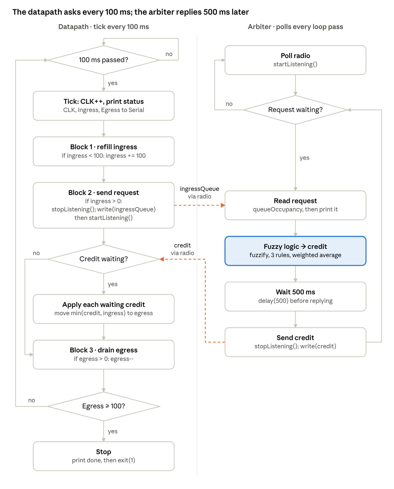
fuzzyLogic() maps a queue occupancy to a credit in four steps.
The input is scored against three fuzzy sets on a 0–10 scale, each giving a membership between 0 and 1. LO and HI are clipped with max(0, min(1, …)), so they act as shoulders; JR is a triangle.
| Input set | Shape as coded | Breakpoints |
|---|---|---|
| LO (low) | 1 up to 2.5, falls to 0 at 5 | 0, 2.5, 5 |
| JR (just right) | 0 at 2, peak 1 at 5, 0 at 8 | 2, 5, 8 |
| HI (high) | 0 up to 5, rises to 1 at 7.5, stays 1 | 5, 7.5, 10 |
IF occupancy is LO THEN credit is LDR (low data rate)
IF occupancy is JR THEN credit is NRC (normal rate)
IF occupancy is HI THEN credit is HDR (high data rate)Each output's strength equals its input membership.
LDR {0, 2.5, 5}, NRC {2, 5, 8} and HDR {5, 7.5, 10}. Each is reduced to its centroid, the average of its three points: 2.5, 5 and 7.5.
A weighted average of those centroids, a simplified center of gravity:
The result is cast to int, which truncates (6.76 becomes 6). The denominator never reaches zero, because at every occupancy at least one set has membership above 0, so the credit always falls between 2 and 7.
| Occupancy | μ LO | μ JR | μ HI | Credit (float) | Credit sent |
|---|---|---|---|---|---|
| 0–2 | 1 | 0 | 0 | 2.50 | 2 |
| 3 | 0.80 | 0.33 | 0 | 3.24 | 3 |
| 5 | 0 | 1 | 0 | 5.00 | 5 |
| 7 | 0 | 0.33 | 0.80 | 6.76 | 6 |
| 8 and above (incl. 100) | 0 | 0 | 1 | 7.50 | 7 |
The datapath asks every 100 ms, but the arbiter can only answer about every 500 ms, so the system settles into roughly one credit of 7 every five datapath ticks. This walkthrough is reasoned from the code, not measured on hardware.
| Time (approx.) | Datapath | Arbiter |
|---|---|---|
| Tick 1 (0 ms) | Ingress 0 → 100. Sends 100. Nothing to read yet. | Receives 100, FIS gives 7, starts delay(500). |
| Ticks 2–5 (100–400 ms) | Ingress already 100, so no refill. Sends 100 again each tick. Egress stays 0. | Still in delay(500). Its radio is still receiving, so requests queue in the 3-deep RX FIFO. |
| ~500 ms | Listening between ticks; the credit lands in its RX FIFO. | Sends credit 7, loops back and finds the next queued request. |
| Tick 6 (~500 ms) | Sends 100, then reads credit 7: ingress 93, egress 7. Egress drains to 6. | Processing a queued (stale) request: another 500 ms wait. |
| Tick 7 | 93 < 100, so ingress jumps to 193. | — |
| Steady state | +7 egress per credit, −1 per tick: net about +2 every 500 ms. | One reply per ~500 ms, always 7, because every request is ≥ 8. |
Two consequences follow:
The code runs, but a careful read turns up six places where it doesn't do what its comments or spec say. The first three affect the specified timing and behavior.
| # | Where | What happens | Suggested fix |
|---|---|---|---|
| 1 | Arbiter: const int CLK_interval = 0.5; | An int can't hold 0.5, so it becomes 0. The tick condition is always true and the arbiter polls as fast as loop() runs. millis() only counts whole milliseconds anyway. | Use const unsigned long CLK_INTERVAL_US = 500; and compare against micros(). |
| 2 | Arbiter: delay(0.5); | delay() takes whole milliseconds, so this is delay(0). | Delete it, or use delayMicroseconds(500). |
| 3 | Datapath refill: ingressQueue += MAX_PKTS; | Adds 100 packets at once instead of one per tick. | If the spec says increment, use ingressQueue++;. |
| 4 | Datapath request and apply | Reads credit right after sending, before the arbiter (500 ms away) can reply, so credits arrive late and requests pile up. | Only send a request when none is outstanding, using a waitingForCredit flag. |
| 5 | Fuzzy input scale | The sets cover 0–10 but the datapath sends 100–193, so every request is fully HI and the credit is always 7. | Scale first: fuzzyLogic(queueOccupancy * 10 / MAX_PKTS), or widen the sets to 0–100. |
| 6 | Datapath stop: exit(1) | On an Uno, exit() halts with interrupts off, so the last Serial message may be cut off. | Call Serial.flush() first, or use while (true) {}. |
Smaller notes: neither sketch checks the bool returned by radio.write(), so failed sends go unnoticed, and the arbiter's delay(500) freezes its own clock while a credit is pending. Payload sizes match because int is 2 bytes on both Unos, but that would break if one board were 32-bit.
Fix #5 is the one that brings the fuzzy logic to life. Once occupancy is scaled into the 0–10 range, the credit actually varies between 2 and 7 with load, instead of sitting at 7.
The pattern here, where a node reports how much it has queued and a central arbiter grants it permission to send, is how many real systems share a link fairly and avoid overflowing buffers.
Cellular networks work this way. In LTE and 5G, a phone sends a buffer status report saying how much uplink data is waiting, and the base station's scheduler replies with a grant for how much it may transmit. Fiber-to-the-home (PON) and cable internet (DOCSIS) follow the same request-and-grant cycle between each home's modem and the provider's equipment. The datapath plays the phone or modem and the arbiter plays the scheduler.
High-speed interconnects use credits so a sender never overruns a receiver's buffer. PCI Express links exchange flow-control credits for each type of traffic, and InfiniBand and Fibre Channel (buffer-to-buffer credits) do the same at the link level. Inside many-core chips, network-on-chip routers pass credits between neighbors for the same reason.
Fuzzy controllers are used where rules of thumb are easier to state than exact equations. Well-known examples include the automatic train operation on Japan's Sendai Subway, as well as appliances such as washing machines and air conditioners that adjust to load. Fuzzy rate and congestion control is also an active research area for wireless sensor networks.
nRF24L01-class 2.4 GHz radios are common in home automation, sensor networks, remote controls and robot or drone telemetry. When many nodes share one gateway, the gateway has to decide who sends and how much. Credit-style arbitration like this gives each node a measured amount of airtime, with more going to the nodes whose queues are fullest.
The radio setup is based on Example 2 (bi-directional communication) of the HowToMechatronics nRF24L01 tutorial, with the joystick and servo removed. The reply timing (credit sent 500 ms after a request) and the 0.5 ms arbiter clock follow the instructor's specification for the project.